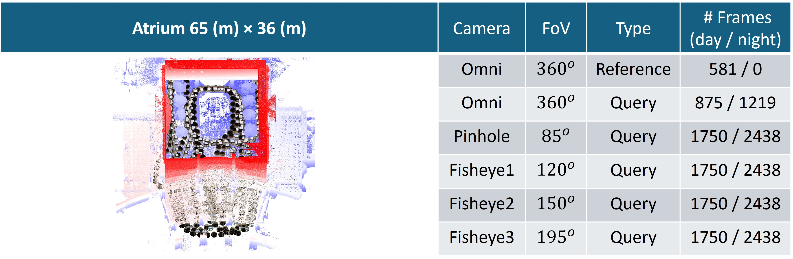
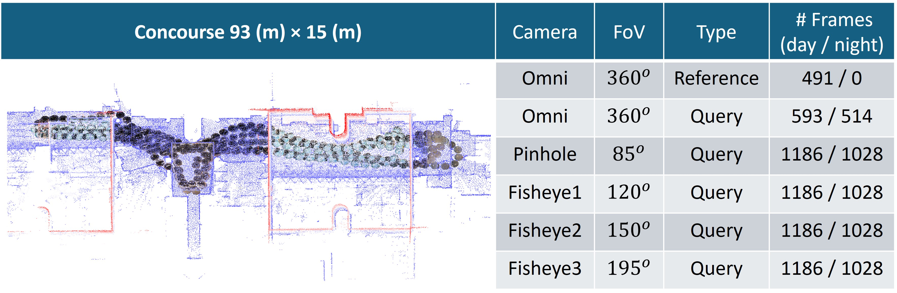
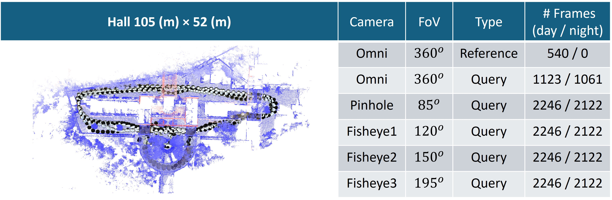
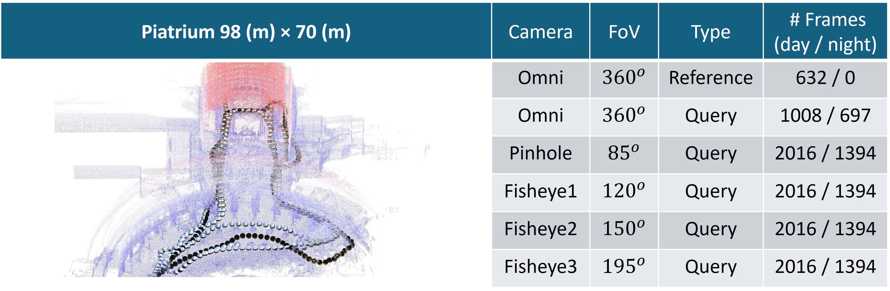
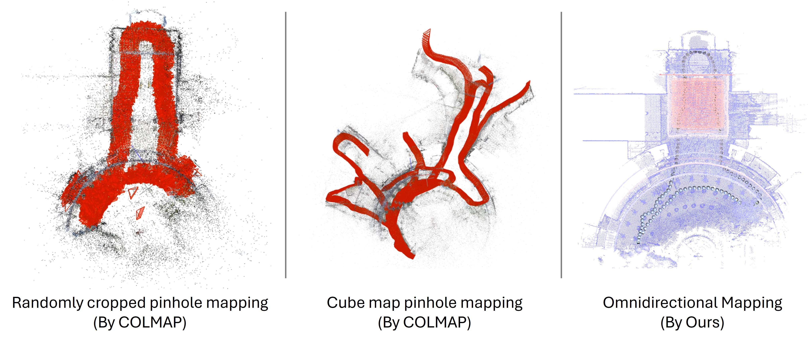
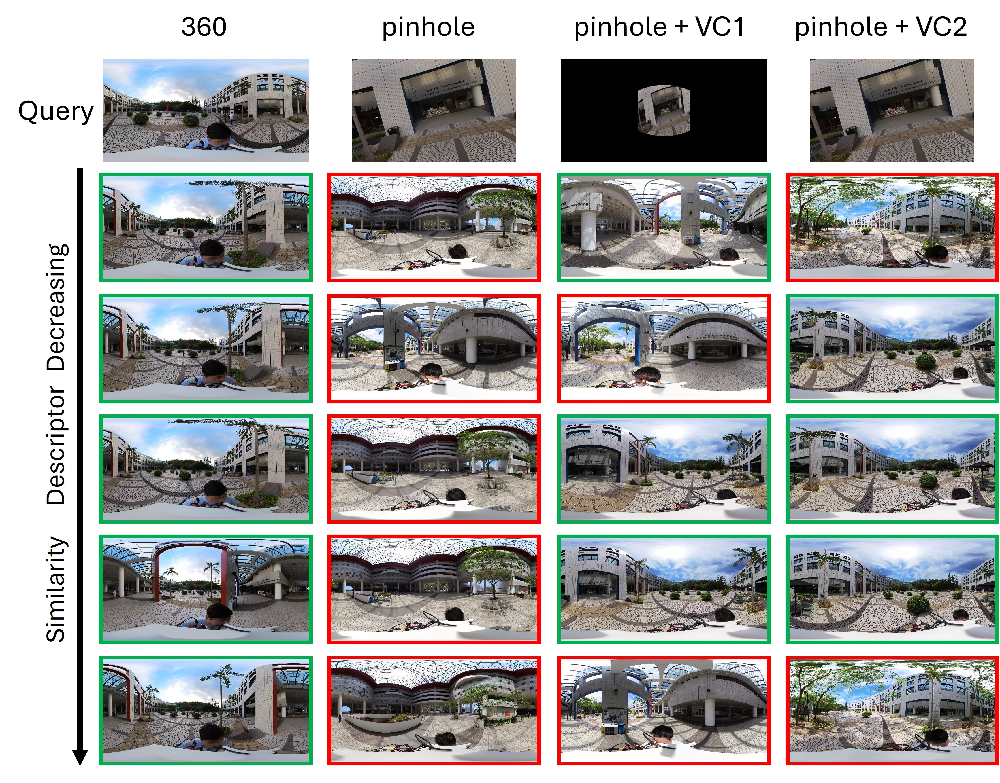
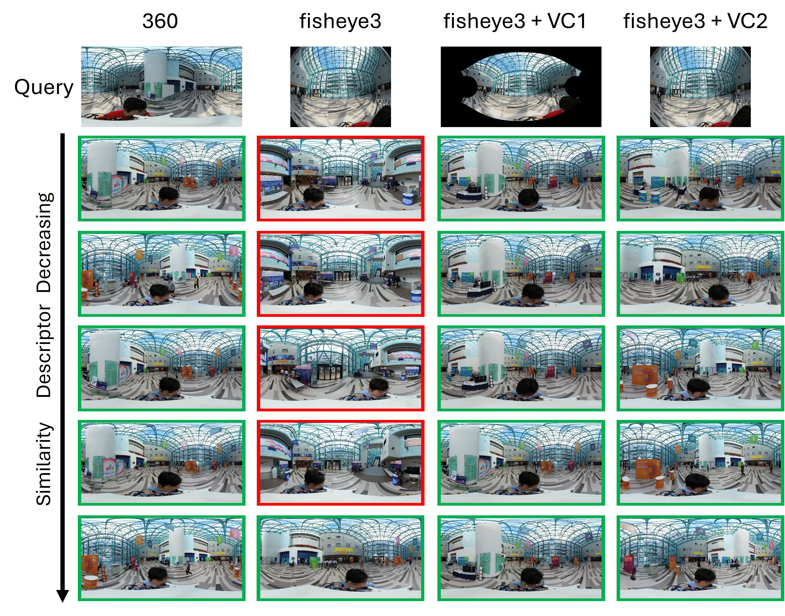

360Loc: A Dataset and Benchmark for Omnidirectional Visual Localization with Cross-device Queries
CVPR 2024
Huajian Huang*1,
Changkun Liu*1,
Yipeng Zhu1, Hui Cheng2,
Tristan Braud1,
Sai-Kit Yeung1
The Hong Kong University of Science and Technology1, Sun Yat-Sen University2
* equal contribution

Abstract
Portable 360ᵒ cameras are becoming a cheap and efficient tool to establish large visual databases.
By capturing omnidirectional views of a scene, these cameras could expedite building environment models
that are essential for visual localization. However, such an advantage is often overlooked due to the lack
of valuable datasets. This paper introduces a new benchmark dataset, 360Loc, composed of 360ᵒ images
with ground truth poses for visual localization. We present a practical implementation of 360ᵒ mapping
combining 360ᵒ images with lidar data to generate the ground truth 6DoF poses. 360Loc is the first dataset
and benchmark that explores the challenge of cross-device visual positioning, involving 360ᵒ reference
frames, and query frames from pinhole, ultra-wide FoV fisheye, and 360ᵒ cameras. We propose a virtual
camera approach to generate lower-FoV query frames from 360ᵒ images, which ensures a fair comparison of
performance among different query types in visual localization tasks. We also extend this virtual camera approach
to feature matching-based and pose regression-based methods to alleviate the performance loss caused by the cross-device
domain gap, and evaluate its effectiveness against state-of-the-art baselines. We demonstrate that omnidirectional visual
localization is more robust in challenging large-scale scenes with symmetries and repetitive structures. These results
provide new insights into 360-camera mapping and omnidirectional visual localization with cross-device queries.
Overview




Results



Citation
@inproceedings{360Loc,
title = {360Loc: A Dataset and Benchmark for Omnidirectional Visual Localization with Cross-device Queries},
author = {Huang, Huajian and Liu, Changkun and Zhu, Yipeng and Cheng Hui and Braud, Tristan and Yeung, Sai-Kit},
booktitle = {Proceedings of the IEEE/CVF Conference on Computer Vision and Pattern Recognition},
year = {2024},
}